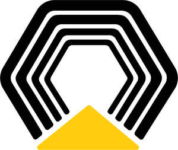

Trade Mark Journal No.2026/012 20 March 2026
UK00004332322 29 January 2026 (7,9,12,25,35,37,40,42,44)

- Class 7
- Machines for use in agriculture, compaction, construction, cleaning, defence, demolition, earth conditioning, earth contouring, earth moving, forestry, landscaping, lifting, marine propulsion, material handling, material scrapping, mining, mulching, oil and gas distribution, oil and gas exploration, oil and gas production, quarrying, paving, pipelaying, power generation, road building and repair, site preparation and remediation, transportation, vegetation management, waste management, air and space exploration; machine tools; power-operated tools; motors and engines, except for land vehicles; machine coupling and transmission components, except for land vehicles; agricultural implements, other than hand-operated hand tools; generators; electricity generators; alternators; electric construction machines; electric mining machines; industrial robots; pumps; compressors; parts, fittings, components and accessories for all the aforesaid goods.
- Class 9
- Navigation, surveying, measuring, signalling, detecting, testing and inspecting apparatus and instruments; apparatus and instruments for conducting, switching, transforming, accumulating, regulating or controlling the distribution or use of electricity; apparatus and instruments for recording, transmitting, reproducing or processing sound, images or data; electrical and electronic parts, fittings, components and accessories for industrial machines, vehicles and power generation equipment; wires, electric; electric wiring harnesses; gauges; switches, electric; electronic displays; circuit breakers; fuses; fuse holders; levelling instruments; power inverters; wireless communication apparatus; amplifiers; antennas; electric relays; radios; electric cables; converters; speakers; electrical adaptors: electrical connectors; electrical couplings; electricity conduits; conduit and wire protectors; jump leads; booster cables; circuit testers, voltage testers; transformers [electricity]; locks [electric], electrical terminals; electric control panels; electronic control apparatus; electronic display panels; electronic control units; electronic control modules; communication equipment; communications apparatus for industrial machinery and vehicles; communication adapters; equipment for remote operation, control, and monitoring of earth moving, earth conditioning, material handling, construction, mining, paving, agricultural, and forestry vehicles, equipment, and machinery, engines, power generation equipment, and off-highway trucks; telematic apparatus; Global Positioning System [GPS] apparatus; thermostats; thermometers; pressure and temperature indicators; fuel, water, and oil level indicators; tachometers; engine diagnostic apparatus; speed checking apparatus for vehicles; alarms; horns; signalling apparatus; optical reflectors; mirrors [optics]; aerials; cameras for vehicles; sensors for vehicles and machinery; digital sensors; simulation apparatus; simulators for the steering and control of vehicles; remote monitoring apparatus; monitoring apparatus, electric; diagnostic apparatus for industrial machinery and vehicles; navigational instruments; navigation apparatus for vehicles [on-board computers]; satellite-aided navigation systems; safety, security, protection and signalling devices; vibration, temperature, infrared, and pressure sensors for industrial machines and vehicles; batteries, electric; battery starters; battery cables; connectors for sale in kit form; battery testers; accumulators [batteries]; power units [batteries]; power distributors [electrical]; rechargeable batteries; battery packs; battery testing apparatus; electrical cells and batteries; fuel cells; solar panels for the production of electricity; cells [electric]; photovoltaic cells; photovoltaic apparatus for generating electricity; battery charging equipment; batteries for electric vehicles; charging stations for electric vehicles; battery swapping stations; battery ground strap connectors; battery tie down connectors; emergency jump start apparatus; voltage converters; electricity storage apparatus; supercapacitors for energy storage; electric power supply units; electric control devices for energy management; energy regulators; power regulating apparatus; computer software for industrial machinery, vehicles and power generation equipment; downloadable mobile applications related to industrial machinery, vehicles and power generation equipment; computer hardware for the collection, transmission, and processing of data of industrial machines, vehicles and power generation equipment; data processing apparatus and equipment related to industrial machinery, vehicles and power generation equipment; onboard computers for industrial machines and vehicles; computer hardware and software for control, testing, operation and monitoring of industrial machinery, vehicles, machine tools, power generation equipment and for providing information related thereto; computer software in the field of statistical analysis, data analysis, predictive analysis, and job site management and planning; computer software for use as an application programming interface (API); virtual reality software; augmented reality software; artificial intelligence software for industrial machines, vehicles and power generation equipment; computers for autonomous-driving industrial machines and vehicles; autonomous driving control systems for industrial machines and vehicles; computer programs for use in autonomous driving, control and navigation of industrial machines and vehicles; energy management software; optimization software; games software; access control equipment and devices; downloadable digital image files authenticated by non-fungible tokens [NFTs]; downloadable virtual industrial machinery; downloadable virtual vehicles; downloadable virtual power generation equipment; downloadable virtual clothing; downable virtual footwear; downloadable virtual toys and toy scale models; mobile phones, smartphones, and accessories therefor; tablet computers; smartwatches; wearable activity trackers; virtual reality headsets; virtual reality glasses; smartglasses; USB sticks; protective and safety equipment; protective helmets; protective industrial shoes; gloves for protection against accidents; clothing for protection against accidents, irradiation and fire; security surveillance apparatus; security surveillance robots; parts, fittings, components and accessories for all the aforesaid goods; downloadable computer software for providing information related to operation and maintenance manuals, parts information, product status reports, repair code information, troubleshooting guides for machinery for use in agriculture, compaction, construction, demolition, earth conditioning, earth contouring, earth moving, forestry, landscaping, lifting, marine, material handling, material scrapping, mining, mulching, oil and gas distribution, exploration and production, paving, pipelaying, power generation, road building and repair, site preparation and remediation, waste management, air and space, quarry, aggregate and cement, vegetation management, transportation, and government and defense, vehicles and apparatus for locomotion by land, air or water for use in agriculture, compaction, construction, demolition, earth conditioning, earth contouring, earth moving, forestry, landscaping, lifting, marine, material handling, material scrapping, mining, mulching, oil and gas distribution, exploration and production, paving, pipelaying, power generation, road building and repair, site preparation and remediation, waste management, air and space, quarry, aggregate and cement, vegetation management, transportation, and government and defense, and internal combustion engines, and generators.
- Class 12
- Vehicles; apparatus for locomotion by land, air or water; land vehicles for use in agriculture, compaction, construction, cleaning, defence, demolition, earth conditioning, earth contouring, earth moving, forestry, landscaping, lifting, marine propulsion, material handling, material scrapping, mining, mulching, oil and gas distribution, oil and gas exploration, oil and gas production, quarrying, paving, pipelaying, power generation, road building and repair, site preparation and remediation, transportation, vegetation management, waste management, air and space exploration; electric vehicles; engines for land vehicles; trucks; loaders [fork-lift trucks]; dumper trucks; tractors; parts, fittings, components and accessories for all the aforesaid goods.
- Class 25
- Clothing, footwear, headwear; parts of clothing, footwear and headgear; soles for footwear; work clothes; work shoes; boots; socks; belts; gloves.
- Class 35
- Retail services in relation to vehicles, equipment, machinery and machine tools for use in agriculture, compaction, construction, cleaning, defence, demolition, earth conditioning, earth contouring, earth moving, forestry, landscaping, lifting, marine propulsion, material handling, material scrapping, mining, mulching, oil and gas distribution, oil and gas exploration, oil and gas production, quarrying, paving, pipelaying, power generation, road building and repair, site preparation and remediation, transportation, vegetation management, waste management, air and space exploration, and parts therefor; retail services in relation to vehicles, and parts therefor; retail services in relation to construction equipment, and parts therefore; retail services in relation to engines and power generation equipment, and parts therefor; online retail services in relation to parts for vehicles, equipment, and machinery for use in agriculture, compaction, construction, cleaning, defence, demolition, earth conditioning, earth contouring, earth moving, forestry, landscaping, lifting, marine propulsion, material handling, material scrapping, mining, mulching, oil and gas distribution, oil and gas exploration, oil and gas production, quarrying, paving, pipelaying, power generation, road building and repair, site preparation and remediation, transportation, vegetation management, waste management, air and space exploration; online retail services in relation to parts for engines and power generation equipment; retail services in the field of construction equipment, mining equipment and generators; retail services in relation to machine tools and power tools; retail services in relation to industrial oils, greases and lubricants; retail services in relation to clothing, footwear, headwear, toys, bags, watches, eyewear and printed matter; arranging and conducting auctions; on-line auction services; providing a searchable database, via the internet, of used construction, compaction, mining, material handling, agricultural, paving, and forestry machinery for sale or rent; advertising of business web sites; banner advertising; preparation of audio and/or visual displays for businesses; providing marketing consulting in the field of social media; advertising and marketing services provided by means of social media; subscription services related to batteries; vehicle fleet (business management of a-) [for others]; recruitment services for construction; data acquisition and analysis via computer networks and the internet.
- Class 37
- Construction services; demolition services; excavation services; mining extraction, oil and gas drilling; repair of industrial machinery; installation of industrial machinery; maintenance of industrial machinery; reconditioning of industrial machinery; repair, installation, servicing, and maintenance of vehicles, equipment and machines for use in agriculture, compaction, construction, cleaning, defence, demolition, earth conditioning, earth contouring, earth moving, forestry, landscaping, lifting, marine propulsion, material handling, material scrapping, mining, mulching, oil and gas distribution, oil and gas exploration, oil and gas production, quarrying, paving, pipelaying, power generation, road building and repair, site preparation and remediation, transportation, vegetation management, waste management, air and space exploration; machinery installation; rental of equipment, namely machines and machine tools for use in compaction, construction, cleaning, defence, demolition, earth conditioning, earth contouring, earth moving, landscaping, lifting, marine propulsion, material handling, material scrapping, mining, mulching, quarrying, paving, pipelaying, road building and repair, site preparation and remediation, transportation, waste management, air and space exploration; remanufacturing of vehicles; vehicle battery charging; charging of electric vehicles; charging of batteries and power storage devices, and rental of equipment therefore; maintenance and repair of engines; rebuilding engines that have been worn or partially destroyed; installation of electricity generators; repair or maintenance of power generators; rental of battery chargers; installation, repair and maintenance of battery energy storage systems; installation, repair and maintenance of charging stations for electric vehicles; replacement of batteries; recharging of batteries; refuelling of land vehicles; vehicle refuelling with hydrogen; repair of energy supply installations; electric vehicle battery swapping services; subscription-based industrial machinery rental services; remote control and operation of earth moving, earth conditioning, material handling, construction, mining, paving equipment, and machinery via computer networks and the internet.
- Class 40
- Remote control and operation of generators, and power generation equipment via computer networks and the internet.
- Class 42
- Scientific and technological services and research and design relating thereto; industrial analysis, industrial research and industrial design services; quality control and authentication services; design and development of computer hardware and software for industrial machinery, vehicles and power generation equipment; engineering and technical consultation; surveying; testing, diagnosis, calibration, and monitoring of earth moving, earth conditioning, material handling, construction, mining, paving, agricultural, and forestry vehicles, equipment, and machinery; testing, diagnosis, calibration, and monitoring of engines, generators, power generation equipment, machinery fleets, trucks, and trucking fleets; monitoring of earth moving, earth conditioning, material handling, construction, mining, paving, agricultural, and forestry vehicles, equipment, and machinery, engines, generators, and power generation equipment via computer networks and the internet; technical data analysis; creation of GPS maps; inspection of plant and machinery; design and development of industrial machinery and land vehicles; research relating to industrial machinery; quality control testing services for industrial machinery; machine condition monitoring; calibration of machines; testing of machinery; machine vision technology research; engineering services for the design and analysis of machinery; software as a service (SaaS) for control, testing, operation and monitoring of industrial machinery, vehicles, machine tools and power generation equipment and for providing information related thereto; providing online non-downloadable computer software for control, testing, operation and monitoring of industrial machinery, vehicles, machine tools and power generation equipment and for providing information related thereto; platform as a service (PaaS); blockchain as a service [BaaS]; artificial intelligence as a service [AIaaS]; rental of computer software; design and development of computer software for vehicle simulation; design of 3D models for 3D printing; design and development of mobile applications; development of energy and power management systems; design and development of energy management software; advisory services relating to the use of energy; advisory services relating to energy efficiency; rental of meters for the recording of energy consumption; chemical analysis; analysis of used machine oils; condition monitoring relating to fluids; exploration services in the field of the oil, gas and mining industries; airborne remote sensing relating to environmental explorations; assessment in the field of technology provided by engineers; providing temporary use of a non-downloadable web application for providing information related to operation and maintenance manuals, parts information, product status reports, repair code information, troubleshooting guides for machinery for use in agriculture, compaction, construction, demolition, earth conditioning, earth contouring, earth moving, forestry, landscaping, lifting, marine, material handling, material scrapping, mining, mulching, oil and gas distribution, exploration and production, paving, pipelaying, power generation, road building and repair, site preparation and remediation, waste management, air and space, quarry, aggregate and cement, vegetation management, transportation, and government and defense, vehicles and apparatus for locomotion by land, air or water for use in agriculture, compaction, construction, demolition, earth conditioning, earth contouring, earth moving, forestry, landscaping, lifting, marine, material handling, material scrapping, mining, mulching, oil and gas distribution, exploration and production, paving, pipelaying, power generation, road building and repair, site preparation and remediation, waste management, air and space, quarry, aggregate and cement, vegetation management, transportation, and government and defense, and internal combustion engines, and generators.
- Class 44
- Remote control and operation of agricultural, and forestry vehicles, equipment, and machinery.
Caterpillar Inc.
Representative: Hogan Lovells International LLP